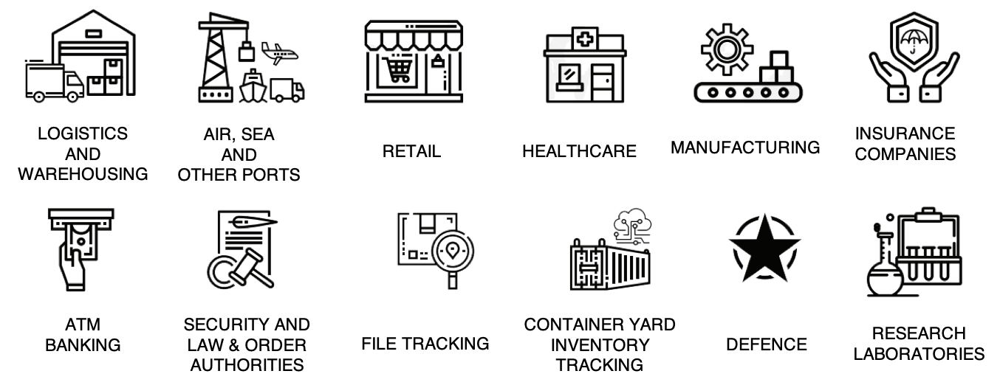

Data Analytics
About Us
Galilee Intelligent Logistics Technologies Private Limited (GILT) is a Bangalore based company offering turnkey RFID and IoT Custom Engineered Smart and Secure business solutions. GILT is powered by a Management Team with Rich Solution Deployment and Project Management expertise in the RFID domain.
Our USP
- Deep understanding of Customer domains
- Exposure to C gen technologies
- High Quality of Customer Service
- No need to replace existing legacy systems
Our Clientele
Our Partners
Our Team

M S Arun
Chairman
Sudhendra Dankanikote
Managing Director
Arul Lawrance
Consultant
M S Arun | Chairman
Mr M S Arun, Chairman, Galilee Intelligent Logistics
Technologies Private Limited (GILT) and a highly
accomplished Logistics Professional, is a resident of
Chennai. He has a degree in Mechanical Engineering from
Madras University and a post graduate degree in
Management Sciences also from the University of Madras.
Mr Arun is also an MBA from Syracuse University in the
USA. Mr Arun is a Logistics Professional with a great
deal of experience in Shipping, CFS and Road Transport
Logistics. He is a highly recognized and sought after
professional in the Logistics Sector. Currently he is
also Vice President for Chandra CFS & Terminal Operators
Private Limited, from March 2020. The company was taken
over by Teamglobal Logistics Pvt Ltd in January 2020. In
the month of March 2020, despite the lockdown, Chandra
CFS handled 1820 TEUs, a jump of 1500 TEUs from the
previous month within a month of his taking over. Mr
Arun has worked in C & V level Senior Leadership
positions with prestigious organizations like
- NDR Infrastructure Pvt Ltd, Chennai as CEO (May 2015 to June 2019).
- Allcargo Logistics Ltd., Chennai. (June 2006 to May 2015) as Sr. GENERAL MANAGER – CFS & ICD Network
- South India Corporation (Agencies) Ltd., Chennai as GENERAL MANAGER (Projects) (Jan 2006 to June 2006)
- South India Corporation (Agencies) Ltd., ICD Surajpur, Greater Noida, U.P.as General Manager in Charge of the ICD (Jan 2004 – Dec 2005)
- SICAL Distriparks (General Manager – Marketing from 1998 – 2004) and Krishna & Company(Chief Executive from 1981 – 1998)
- Making NACFS very pro-active in Chennai with excellent relations in Customs Commissionerate, Chennai, and in CBIC, Delhi.
- One of the prime movers in introducing system driven documentation in Chennai which is being implemented in all custom houses in India.
- Introduced RFID for transport vehicles, to ensure that only genuine trailers carry containers for CFSs. This has been lauded by Customs who have subsequently utilized it for paperless documentation.
- Received CERTIFICATE OF MERIT from World Customs Organization in 2017 from Chairman, CBEC, and the first non-Customs person to receive it for implementing the RFID integrated Trailer and Container Tracking with Paperless Documentation at all the Container freight Stations and ICDs that are part of the Chennai Chapter of NACFS, all the Ports and Terminals in Chennai. This is a very unique, first of its kind project in India. The project has been able to considerably reduce waiting time of Trailers inside the Ports by almost 85%. The project has also enhanced the safety of cargo and trailers carrying the Cargo.
- NACFS – Chennai Chapter has filed case against various trailer owner organizations in Chennai with COMPETITION COMMISSION in May 2018 against their dictatorial methods. The case is pending.
- President – Madras Stevedores Association – 1996-1997.
- Board Member of Madras Dock Labour Board – 1985-1990.
- Committee Member of Stevedores Association from 1984-1996.
- Served on various committees of Chennai Port Trust from 1985 to 1993.
- Committee Member of NACFS (National Association of CFSs) from 2000 to 2004.
- Served on various committees of Chennai Customs as a representative of NACFS. Executive Committee Member of NACFS since 2010.
- Chairman, NACFS – Chennai Chapter, since September 2012
Sudhendra Dankanikote | Managing Director
Mr Sudhendra Dankanikote is the Managing Director and
part of the founding team at Galilee Intelligent
Logistics Technologies Private Limited (GILT). Galilee
commenced operations in December 2019 and is focused on
RFID & IoT, AI and DA driven projects. He is a resident
of Bangalore City. Sudhendra is an Electrical Engineer
by qualification. He has also received Proficience
Certification in Strategic Management from Indian
Institute of Science, Bangalore. He has also attended an
Executive Development Program in Indian Institute of
Management, Calcutta besides other courses. He is a
well-regarded RFID and IoT solutions professional and
has often delivered Guest lectures on Technology
Integrated Supply Chain Management at IIMM, Bangalore.
Sudhendra has worked in both Government and Private Sectors and has rich experience in Projects, Operation & Maintenance, Supply Chain (Procurement),Marketing, Business Development, and Solutions. He was part of IBP, a Public Sector Petroleum company, which was merged with Indian Oil Corporation Limited from 1988(August) till 1999 (August). He has worked with IBP in various capacities in departments like Projects (Design and Implementation), Maintenance, and Retail Development Modernization and Automation. He was actively involved in IT and Automation of the Terminals operated by IBP. Prior to his assignment with IBP, Sudhendra has worked with M/S Escorts India Limited, M/S Goetze India limited, LML Scooters, Rajashri Cements and Bhoruka Steel in their Maintenance Departments.
Sudhendra has led ibTrack Solutions Private Limited from 216 as a Director and Chief Operating Officer. He was responsible for the Design and Implementation of the RFID and IoT integrated Tracking of Trailers carrying Containers with integrated Paperless Documentation for all the Container Freight Stations under NACFS, Chennai (38). The solution is being run by ibTrack on a Build, Operate and Transfer basis from 2017. End users of the project include Chennai Customs, NACFS – Chennai, DP World Terminal – Chennai, Port of Singapore Authority-Chennai, Adani Katupalli Terminal, Adani Ennore International Container Terminal – Ennore Port, and the Port of Chennai.
Sudhendra has also been part of the leadership Team as Director (Sales)at ABLogics Private Limited (from 2009-2015). He was Head (Solutions) for Winfoware Technologies Limited (2005-2009). He has designed and implemented and executed RFID and other Technology integrated solutions for reputed agencies including: ADA (Aeronautical Development Agency – Assets management, Visitor Management, File Management), ADE (Aeronautical Development Establishment – Assets Management), Chennai Port Trust (Vehicle Tracking and IVRS for Ship Movement), Bangalore Metropolitan Transport Corporation (BMTC) – RFID solution integrated with Touchscreen kiosk for employee management, Karnataka Forest Department(an ERP for Timber Management), Delhi Transport Corporation (In Bus Surveillance), TITAN (Watch Inventory Monitoring), Café Coffee Day (Inventory Management FIFO Inventory Monitoring), Navayuga Group (IP Security Surveillance), Perini Investments, South Africa (a multimedia project), Orange Telecom, Mauritius (Visitor Tracking), Mysore Dasara (IVRS), BSNL Bangalore (IVRS projects), ABB – Whitefield(Asset Tracking), ABB Corporate (Visitor Tracking and Feedback Monitoring for Global Vendor event at Delhi), ABB (Asset Tracking – Rajajinagar), ABB (outsourced project for Vehicle Tracking and authentication at Terminals, L&T (Hyderabad Metro).
Sudhendra has worked in both Government and Private Sectors and has rich experience in Projects, Operation & Maintenance, Supply Chain (Procurement),Marketing, Business Development, and Solutions. He was part of IBP, a Public Sector Petroleum company, which was merged with Indian Oil Corporation Limited from 1988(August) till 1999 (August). He has worked with IBP in various capacities in departments like Projects (Design and Implementation), Maintenance, and Retail Development Modernization and Automation. He was actively involved in IT and Automation of the Terminals operated by IBP. Prior to his assignment with IBP, Sudhendra has worked with M/S Escorts India Limited, M/S Goetze India limited, LML Scooters, Rajashri Cements and Bhoruka Steel in their Maintenance Departments.
Sudhendra has led ibTrack Solutions Private Limited from 216 as a Director and Chief Operating Officer. He was responsible for the Design and Implementation of the RFID and IoT integrated Tracking of Trailers carrying Containers with integrated Paperless Documentation for all the Container Freight Stations under NACFS, Chennai (38). The solution is being run by ibTrack on a Build, Operate and Transfer basis from 2017. End users of the project include Chennai Customs, NACFS – Chennai, DP World Terminal – Chennai, Port of Singapore Authority-Chennai, Adani Katupalli Terminal, Adani Ennore International Container Terminal – Ennore Port, and the Port of Chennai.
Sudhendra has also been part of the leadership Team as Director (Sales)at ABLogics Private Limited (from 2009-2015). He was Head (Solutions) for Winfoware Technologies Limited (2005-2009). He has designed and implemented and executed RFID and other Technology integrated solutions for reputed agencies including: ADA (Aeronautical Development Agency – Assets management, Visitor Management, File Management), ADE (Aeronautical Development Establishment – Assets Management), Chennai Port Trust (Vehicle Tracking and IVRS for Ship Movement), Bangalore Metropolitan Transport Corporation (BMTC) – RFID solution integrated with Touchscreen kiosk for employee management, Karnataka Forest Department(an ERP for Timber Management), Delhi Transport Corporation (In Bus Surveillance), TITAN (Watch Inventory Monitoring), Café Coffee Day (Inventory Management FIFO Inventory Monitoring), Navayuga Group (IP Security Surveillance), Perini Investments, South Africa (a multimedia project), Orange Telecom, Mauritius (Visitor Tracking), Mysore Dasara (IVRS), BSNL Bangalore (IVRS projects), ABB – Whitefield(Asset Tracking), ABB Corporate (Visitor Tracking and Feedback Monitoring for Global Vendor event at Delhi), ABB (Asset Tracking – Rajajinagar), ABB (outsourced project for Vehicle Tracking and authentication at Terminals, L&T (Hyderabad Metro).
Arul Lawrance | Consultant
Capt Arul Lawrance is a Consultant with Galilee
Intelligent Logistics Technologies Private Limited
(GILT). He is a science graduate from Loyola College,
Chennai and has a Master (FG) Certificate of Competency.
issued by the Director General of Shipping, Government
of India. Capt Lawrance is a Certified Internal & ISM
Auditor.
Capt Lawrance is a widely experienced person in the Marine Logistics and
Operations domains, having spent over 44 (19 sailing + 25 ashore) years working
in the maritime transport industry, with a diverse portfolio of experience
blended with technical skills and management experience with understanding and
an overview of business realities.
Capt. Lawrance is highly regarded in the marine logistics domain because of his
all-round exposure to Marine Operations. His sailing exposure has enabled him
with skills like Cost effective Operational and Asset Management skills, apart
from Crisis Management abilities. Onshore experience of Captain Lawrance
includes heading a Private Container Terminal and other key positions.
Capt Arul Lawrance was CEO, SICAL, a leading CFS company at Chennai (From Dec 2014 to Oct 2019).
Other leadership positions held by him include-
Honorary Positions Held:
- Executive Director with M/S Cen Logistics & Shipping, (SME) also involved in Logistics & Shipping Training & Operations from June 2012 to July 2014. In the same period worked in their sister organization as IIL Executive Director with their Shipping and Logistics Training School, handling classes for MBA degree students.
- M/S Fairway Shipping and Logistics Limited as CEO from March 2008 – May 2012
- November 2007 - January 2008: Officiated as surveyor / marine consultant for M/s Eagle Maritime Consultants, Houston, USA for project cargo shipments in the Middle East.
- July 1999 - July 2007: Deputy General Manager, M/S Seahorse group of Companies. Representing a group of ship owner Principals.
Honorary Positions Held:
- Chairman, Chennai and Ennore Ports Steamer Agents Association, (CHENSAA), Chennai.
- Vice President, Federation of Ship Agents Assn of India, Mumbai.
- Core Committee member for policy/procedure implementation with Chennai Port, Container Terminal and Chennai Customs.
- Secretary of National Association of Container Freight Stations, Chennai Chapter.
Products


Contact
Galilee Intelligent Logistics Technology Private Limited,
#557, 3rd Floor, 17th Cross, 2nd Stage, Indiranagar,
Bangalore - 560038
Phone: +91 80 4371 5630
Email: sales@gilttech.in